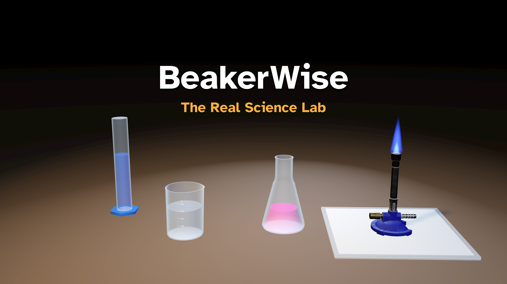
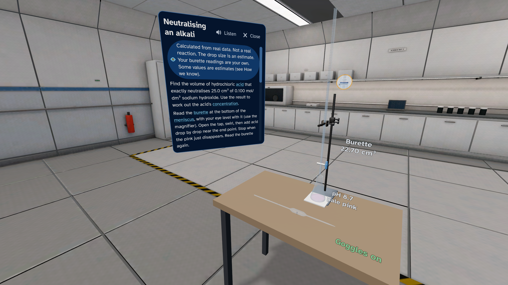
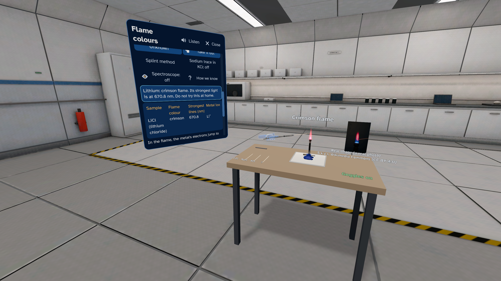
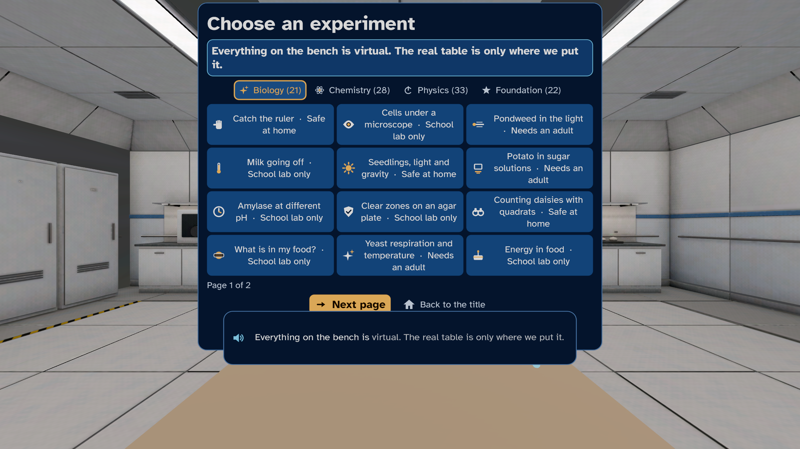

BeakerWise: The Real Science Lab

Science practicals on a virtual lab bench. In mixed reality the bench sits on your real table, or work in a virtual science room. 104 experiments in biology, chemistry and physics, from melting ice to titrations and flame colours. Most results are calculated from real, sourced data, and the app says when a number is a good guess. Four reading depths, from short and simple to expert detail. For ages 10 and up. No ads, no chat, no accounts, no in-app purchases and no personal data collected.
Get BeakerWise on the Meta Horizon Store
At a glance
| Fact | Detail |
|---|---|
| Price | USD 3.99 in the US store. The store shows the price for your country. |
| Headset | Meta Quest 3 |
| Ages | For ages 10 and up. |
| Where it is sold | The Meta Horizon Store |
| Internet | Not required to use the app |
| Mixed reality | Yes, optional. In mixed reality the bench sits on your real table. Without it, you work in a virtual science room. |
| Controls | Meta Quest Touch controllers or hands |
| Players | Single player |
| Comfort | Comfortable |
| Language | English (UK) |
| Ads, chat and in-app purchases | None. The app collects no personal data. |
| Developer | dav3studios |
A lab on your table
In mixed reality a virtual lab bench sits on your real table. Or work in a virtual science room. Burettes, Bunsen burners, circuits, lenses and microscopes, all virtual. Play seated. Every action also has a button on the panel.
104 experiments
21 in biology, 28 in chemistry, 33 in physics and 22 simpler first experiments. From melting ice and magnets to titrations, flame colours and light through two slits. Many are linked to the practical skills in the Department for Education's GCSE and A level science subject content for England.
Real data, honest labels
Most results are calculated from real data, such as NIST and IAPWS values. A label always says what you see. When a number is a good guess, the app says so. The "How we know" card names the sources.
Safety first
A safety card before every experiment says if it is safe at home, needs an adult, or is for a school lab or a teacher only. The app shows good habits, such as goggles before a flame. It helps you prepare for a practical. It does not replace doing it in a school lab.
Clear for everyone
Four reading depths, from Quick Look to Expert. A computer-generated British voice reads aloud, with subtitles. Magnifiers for fine readings, and results in tables and graphs.
For families
Up to six explorers, pictures only, no names. Break reminders. An adult should supervise children's play. No ads, no chat, no accounts, no in-app purchases and no personal data collected. Plays offline.
Features
- 104 experiments in biology, chemistry and physics, each at four reading depths
- A virtual lab bench on your real table in mixed reality, or a virtual science room
- Most results calculated from real, sourced data, with a label that always says what you see
- Good guesses are marked, and the "How we know" card names the sources
- A safety card before every experiment, with good lab habits such as goggles
- A computer-generated voice that reads aloud, with subtitles
- Magnifiers for fine readings, and results in tables and graphs
- Seated play, with a panel button for every action
- No ads, no chat, no accounts, no in-app purchases and no personal data collected
Pictures



More from dav3studios
- SpaceWise: The real solar system at its true size and in true time, with eight narrated journeys.
- BodyWise: A ride through the real human body, with blood cells at their real size.
- EpochWise: 45 moments of history on the real land, under the sky computed for that date.
- GambitWise: Learn chess and Go one small step at a time, with a spoken coach. Free.
On this site
- Help and support
- Privacy policy
- Terms of use
- Credits: the people and works that the app uses, with their licences
BeakerWise is made by dav3studios for Meta Quest. Get it on the Meta Horizon Store.